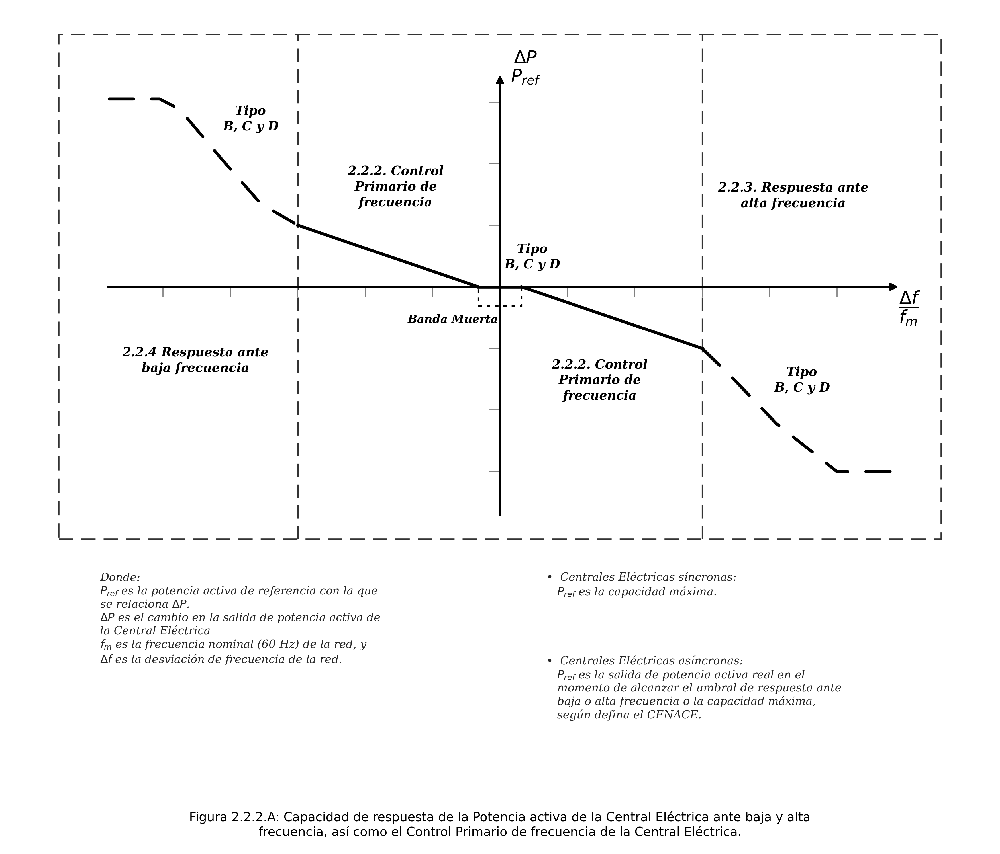
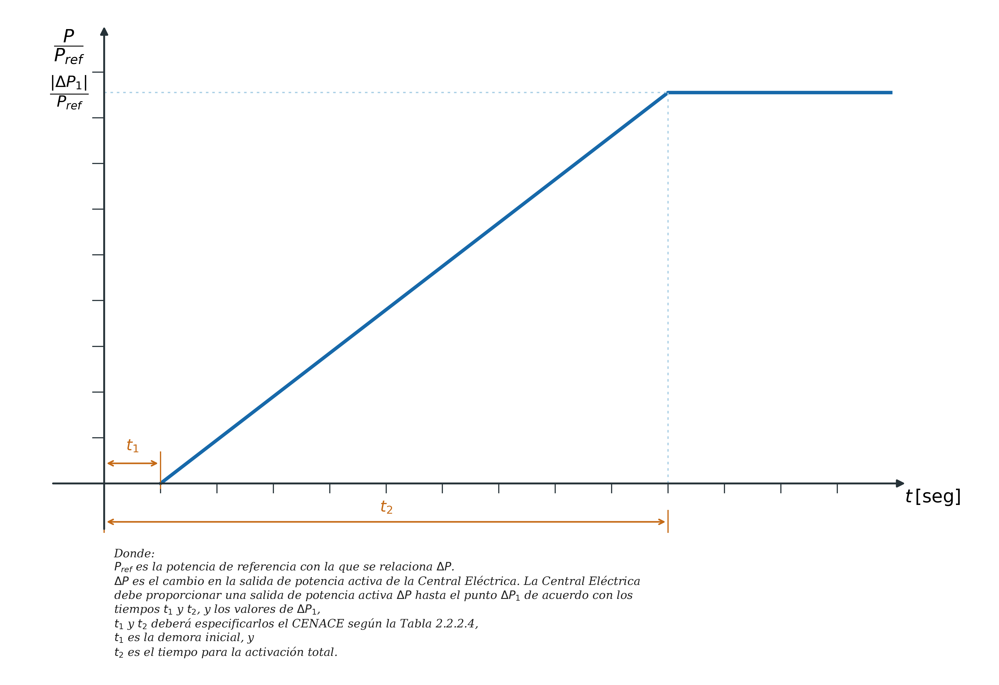

Capítulo 2. Requerimientos de Interconexión ante variaciones de frecuencia de la red, control primario y secundario de la frecuencia
El Capítulo 2 establece los requerimientos que permiten al SEN mantener la frecuencia dentro de márgenes seguros mediante la participación de todas las Centrales Eléctricas. Cubre tres niveles: la capacidad de sobrevivir excursiones de frecuencia (2.1), la capacidad de responder activamente con Control Primario (2.2, todos los tipos), y la capacidad de participar en el Control Secundario centralizado del CENACE (2.3–2.4, tipos C y D).
2.1Zonas de Frecuencia — Requerimiento Mínimo de Operación sin Desconexión
Para cada área síncrona, todas las Centrales Eléctricas, durante su vida útil, deben permanecer en operación, sin desconectarse, dentro de los rangos de frecuencia y tiempos mínimos que se muestran en la Tabla 2.1. RES/550/2021, Manual INTE, Cap. 2 2.1 — DOF 31-dic-2021 · PDF p. 218
| Área Síncrona | Rango de frecuencias | Tiempo mínimo acumulado de operación |
|---|---|---|
| SIN y Sistema Interconectado Baja California (SIBC) | 61.8 Hz < f < 62.4 Hz | 15 minutos |
| 61.2 Hz < f < 61.8 Hz | 30 minutos | |
| 58.8 Hz < f < 61.2 Hz | Ilimitado (zona nominal) | |
| 58.2 Hz < f < 58.8 Hz | 30 minutos | |
| 57.0 Hz < f < 58.2 Hz | 15 minutos | |
| Sistema Interconectado Baja California Sur (SIBCS) y Sistema Interconectado Mulegé (SIM) | 61.8 Hz < f < 63.0 Hz | 15 minutos |
| 61.2 Hz < f < 61.8 Hz | 30 minutos | |
| 58.8 Hz < f < 61.2 Hz | Ilimitado (zona nominal) | |
| 58.2 Hz < f < 58.8 Hz | 30 minutos | |
| 57.0 Hz < f < 58.2 Hz | 15 minutos |
2.2Requerimientos para Centrales Eléctricas Tipo B
2.2.1 Razón de Cambio de la Frecuencia (ROCOF)
Las Centrales Eléctricas deberán mantenerse interconectadas a la Red Eléctrica y operando ante razones de cambio de la frecuencia respecto al tiempo (ROCOF) de hasta 2.5 Hz/s, medidas en una ventana de tiempo de 200 milisegundos. RES/550/2021, Manual INTE, Cap. 2 2.2.1 — DOF 31-dic-2021 · PDF p. 219
El ROCOF mide la velocidad con que cambia la frecuencia, no la frecuencia misma. Un ROCOF elevado (p.ej. ≥ 2 Hz/s) indica pérdida brusca de generación o una falla de separación. El límite de 2.5 Hz/s medido en ventana de 200 ms es el umbral que toda CE debe soportar sin desconectarse. Si la tecnología lo justifica, el CENACE puede adecuar este límite. Las protecciones de ROCOF instaladas para detección de islamiento (5.2.2) deben ajustarse por encima de este umbral para evitar disparos no deseados.
2.2.2 Control Primario de Frecuencia
La Central Eléctrica debe proveer una respuesta de potencia activa a la frecuencia de acuerdo con los parámetros especificados por el CENACE dentro de los rangos de la Tabla 2.2.2.A. Cuando el modo de Control Primario esté activo, su valor de consigna debe prevalecer sobre cualquier otro valor de consigna. RES/550/2021, Manual INTE, Cap. 2 2.2.2 — DOF 31-dic-2021 · PDF p. 219
| Parámetro | Rango configurable |
|---|---|
| Intervalo de potencia activa en relación con Pref | 3 – 10 % |
| Insensibilidad propia del control (deadband tipo A) | 0 – 15 mHz / 0 – 0.025 % |
| Banda muerta de respuesta a la frecuencia | ± 30 mHz (valor fijo) |
| Característica de regulación (droop) | 3 – 8 % |
| Tiempo máximo de retardo a la respuesta t₁ — CE Síncrona | ≤ 2 segundos |
| Tiempo máximo de retardo a la respuesta t₁ — CE Asíncrona | < 2 segundos |
| Tiempo máximo de respuesta completa t₂ | ≤ 30 segundos |
Zona activa del Control Primario
El Control Primario se activa cuando la frecuencia sale de la zona muerta (±30 mHz alrededor de 60 Hz). Para el SIN, SIBC y SIBCS, la respuesta de alta frecuencia se activa a partir de 60.2 Hz y la de baja frecuencia a partir de 59.8 Hz. Para el SIM, a partir de 60.3 Hz y 59.7 Hz respectivamente. La característica de regulación (droop) define la pendiente: con un 5% de droop, una caída de frecuencia del 5% lleva a la CE a entregar su plena banda de regulación (hasta el 10% de Pref adicional).
Tabla 2.2.2.B — Rangos de Regulación de Potencia Activa por Tecnología
| Tecnología / Combustible principal | Rango de regulación (%Pref) | Notas |
|---|---|---|
| Carboeléctrica — carbón pulverizado | 35 – 100 % | Sujeto a emisiones GEI 2/ |
| Termoeléctrica — combustóleo | 20 – 100 % | Sujeto a emisiones GEI 2/ |
| Termoeléctrica — gas | 20 – 100 % | Sujeto a emisiones GEI 2/ |
| Termoeléctrica — biogás | 35 – 100 % | |
| Termoeléctrica — paja o madera | 50 – 100 % | |
| Carboeléctrica — carbón sólido | 50 – 100 % | Sujeto a emisiones GEI 2/ |
| Termoeléctrica — biomasa | 70 – 100 % | |
| Motor de gas | 30 % (35 % mín. 5 min) – 100 % | Sujeto a emisiones GEI 2/ |
| Turbina de gas | 30 – 95 % | Sujeto a emisiones GEI 2/ |
| Ciclo combinado | 35 – 95 % | En medio ciclo: acordar con CENACE 1/ |
| Motor Diésel | 30 % (20 % mín. 5 min) – 100 % | Sujeto a emisiones GEI 2/ |
| Central Geotérmica | 50 – 100 % | |
| Central Eólica | 0 – 100 % | Sujeto a disponibilidad del recurso |
| Central Fotovoltaica | 0 – 100 % | Sujeto a disponibilidad del recurso |
| Hidroeléctrica | 0 – 100 % | Sujeto a disponibilidad hídrica |
| Nucleoeléctrica | 50 – 100 % |
1/ Los rangos de regulación cuando la CE esté operando con medio ciclo serán acordados con el CENACE. 2/ El rango de regulación puede estar sujeto a restricciones de emisiones de gases de efecto invernadero.


2.2.3 Respuesta ante Alta Frecuencia · 2.2.4 Respuesta ante Baja Frecuencia
| Evento | SIN · SIBC · SIBCS | SIM — Mulegé | t₁ máx. |
|---|---|---|---|
| Activación alta frecuencia (reducción de P) | > 60.2 Hz | > 60.3 Hz | < 2 s |
| Activación baja frecuencia (incremento de P) | < 59.8 Hz | < 59.7 Hz | < 2 s |
Cuando el Control Primario de alta o baja frecuencia está activo, su consigna prevalece sobre cualquier otro valor de consigna (6.1.3). En baja frecuencia, las Centrales Eléctricas Asíncronas (eólica, fotovoltaica) deben participar entregando potencia activa en tanto las condiciones ambientales lo permitan —es decir, si el recurso (viento, sol) está disponible y el operador ha solicitado previamente operar por debajo de la potencia de referencia.
2.2.5–2.2.10 Restricción · Control de P · Reconexión · Desconexión ante Baja f
2.3Requerimientos Adicionales para Centrales Eléctricas Tipo C
Aplican todos los requerimientos de 2.2, más los siguientes:
2.3.1 Control Secundario de Frecuencia (AGC)
Las Centrales Eléctricas tipo C deben contar con el equipamiento necesario, para participar en el Control Secundario de frecuencia de acuerdo con las características especificadas en el Manual de TIC y con la regulación aplicable en la materia. RES/550/2021, Manual INTE, Cap. 2 2.3.1 — DOF 31-dic-2021 · PDF p. 223
El Control Secundario —también denominado Regulación Automática de Generación (AGC, Automatic Generation Control)— es el sistema centralizado del CENACE que envía señales de ajuste de potencia activa a las Centrales para restaurar la frecuencia al valor nominal (60.0 Hz) y eliminar los flujos de energía en desequilibrio entre áreas. Las Centrales tipo C deben instalar el hardware y software de comunicación conforme al Manual TIC. Las CE tipo C que tecnológicamente no cuenten con estas capacidades deben manifestarlo al CENACE para su análisis —no es una exención automática.
2.3.2 Monitoreo en Tiempo Real del Control Primario y Secundario
Con base en los Estudios de Interconexión y los requerimientos del MEM, el CENACE podrá solicitar el monitoreo de tiempo real supervisando las siguientes señales:
El CENACE puede especificar señales adicionales en cualquier momento si las condiciones del SEN lo requieren.
2.4Requerimientos Adicionales para Centrales Eléctricas Tipo D
Aplican los requerimientos de 2.3 (tipo C), más los siguientes:
2.4.1 Monitoreo en Tiempo Real — Obligatorio con Telemetría Segura
La Central Eléctrica tipo D deberá contar con el equipamiento necesario para el monitoreo y envío en tiempo real y de manera segura al CENACE la información correspondiente al Control Primario y Secundario de frecuencia de acuerdo con las características especificadas en el Manual de TIC. Al menos se requieren las señales definidas en el apartado 2.3.2 de este Manual Regulatorio. RES/550/2021, Manual INTE, Cap. 2 2.4.1 — DOF 31-dic-2021 · PDF p. 224
La diferencia con tipo C es que para el tipo D el monitoreo es obligatorio (no a solicitud) y debe incluir el envío activo al CENACE mediante telemetría segura conforme al Manual TIC. Una CE tipo D debe estar siempre conectada al SIM (Sistema de Información del Mercado) del CENACE con las señales A–I del 2.3.2 transmitidas en tiempo real.